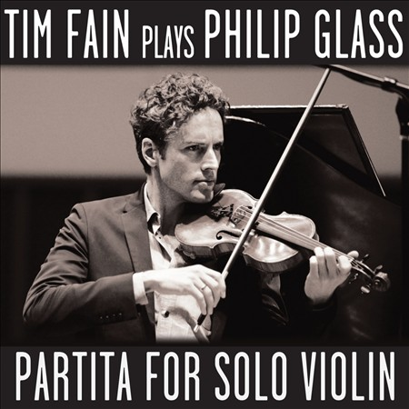

29
Jan
2016
Favourite classical albums of 2015
By Stephen J. Nereffid. Posted in Classical | No Comments »This has been another excellent year in classical recordings for me. I remain amazed at how much fine music of the past there is for me to discover, not to mention the brand-new delights that are increasingly catching my ear. This process of exploration means that, as usual, my list tends to avoid the standard classical repertoire but nevertheless covers plenty of ground.
#1
David Lang: The Difficulty of Crossing a Field
Beverly O’Regan Thiele; Jay O. Sanders; Harlem String Quartet; Douglas Kinney Frost
[Cantaloupe]
{kind=link}
David Lang’s signature dark beauties are on full display in this 2002 opera. Ambrose Bierce’s short-short story is essentially a piece of reportage describing the unexplained disappearance of an Alabama plantation owner as he walked across a pasture; Mac Wellman’s libretto ingeniously expands on the tale, still providing no answers but adding great depth and humanity.
#2
Field Recordings
Bang On A Can All-Stars
[Cantaloupe]
{kind=link}
Twelve new pieces (plus an extract from Steve Reich’s The Cave) in which the composer makes use of a piece of previously recorded material: from John Cage speaking (Florent Ghys) to Chicago street musicians (Anna Clyne) to blades being sharpened (David Lang). Despite the varied nature of the fare on offer, it all comes together wonderfully to make a proper album.
#3
Render
Roomful of Teeth
[New Amsterdam]
{kind=link}
Back in the height of the avant-garde, people like Berio, Ligeti and Stockhausen were writing weird pieces that explored the possibilities of what could be done with the human voice. If, like me, you admired the cleverness and occasional wit of it all but wished they could, you know, write a good tune, then this compelling new music in thrilling performances is just what you need.
#4
Nikolai Peyko: Piano music, volume 2
Dmitry Korostelyov
[Toccata]
{kind=link}
Nikolay Peyko (1916-1995) was an important figure in Russian musical life, though I’d not heard of him before this album. The music here ranges from 1942 to 1992 and is what you might expect (indeed, hope for) from someone who was once Shostakovich’s teaching assistant. Unfortunately little of Peyko’s music is available in recordings, but he might deserve a Weinberg-style revival.
#5
Lauren Karpman: Ask Your Mama
various; San Francisco Ballet Orchestra/George Manahan
[Avie]
{kind=link}
When Langston Hughes published his epic Ask Your Mama: 12 Moods for Jazz in 1961, he included in the margins instructions for musical accompaniment. In her equally epic setting that fuses jazz, hip-hop and classical with a bit of sound collage thrown in, Lauren Karpman follows his lead – though sometimes more as guideline than as gospel – to inspired effect.
#6
If the Owl Calls Again
Christianne Stotijn
[Warner]
{kind=link}
One of my favourite mezzos here presents a recital inspired by her fascination with owls as a source of wisdom and what she calls “philosophical recognition of nature”. It’s a diverse set of music – from Mussorgsky through Bridge and Ravel to the present-day, with texts in seven languages – but Stotijn’s committed performances bind it all into a coherent whole.
#7
JS Bach: Goldberg Variations (arr Sitkovetsky)
Britten Sinfonia/Thomas Gould
[Harmonia Mundi]
{kind=link}
I’ve remarked before that Bach’s music lends itself to arrangement for pretty much any instrument, and here we are again… Dmitri Sitkovetsky created a string trio version in 1985, then expanded it for string orchestra as heard here. The timbre has a lovely warm glow – none of the clotted excesses of the “big band” Bach of yore.
 #8
#8
Haydn & Mozart: Concertos
Arcangelo/Jonathan Cohen
[Hyperion]
Speaking of “big band” music, when this release came out I realised that my only recordings of Mozart’s oboe and bassoon concertos were the 40-year-old ones from Karl Böhm and the Vienna Philharmonic. We live in a different world now! Arcangelo has become a real go-to group for 18th-century music – this year’s recording of Mozart violin concertos with Vilde Frang is also a keeper.
#9
Yes!
Julie Fuchs
[Deutsche Grammophon]
{kind=link}
As might be anticipated from its affirmative title, this French soprano’s collection of arias and songs from the early 20th century is a mostly cheerful affair. There are some old favourites – Lehár’s Vilja-Lied, Weill’s Morität von Mackie Messer, and Youmans’s Tea for two (all en Français) – but plenty of charming discoveries from the likes of Messager, Hahn, and Honegger.
#10
Lois V Vierk: Words Fail Me
various
[New World]
{kind=link}
A notable figure in the downtown New York scene of the 80s and 90s, Vierk hasn’t composed much since then because of a long-term illness. Her music’s minimalist, but greatly influenced by the courtly gagaku music of Japan. Three of the four pieces here are from 1991-6; the title work from 2005 is a response to 9/11, 7 minutes of melancholy followed by 12 of a relentlessly driving climax.
#11
Julia Wolfe: Anthracite Fields
Trinity Wall Street Choir; Bang On A Can All-Stars
[Cantaloupe]
{kind=link}
The Pulitzer Prize for Music has been on a roll lately, the last three winners being Caroline Shaw, John Luther Adams, and now – hurrah! – Julia Wolfe. Anthracite Fields is an oratorio paying tribute to the coal miners of Pennsylvania and their families; in its mix of folk materials, Glass-like minimalism and much else besides, it builds on Wolfe’s achievements in Steel Hammer.
#12
Philip Glass: Complete Etudes
Nicolas Horvath
[Grand Piano]
{kind=link}
2015 was the year Philip Glass became one of my favourite composers again. I first fell in love with his late-70s/early-80s works (such as the “trilogy operas”) but wasn’t so impressed with his subsequent work. More recently, though, he seems to have found new focus (or perhaps it’s just me), and the two sets of etudes from 1995 and 2012 add a dash of romanticism to his familiar style.
#13
Postcard from Heaven
Susan Allen
[New World]
{kind=link}
An album of music mostly for solo harp should not under normal circumstances make my end-of-year list. But bookended by two John Cage pieces – In a Landscape and the title work – Susan Allen’s recital has little hint of the drawing-room about it. Gloria Coates’s Goethe-inspired Perchance to Dream for harp and vibraphone is the haunting highlight.
#14
Time Present and Time Past
Mahan Esfahani; Concerto Köln
[Deutsche Grammophon]
{kind=link}
Harpsichordist-of-the-moment Mahan Esfahani’s major-label debut doesn’t play it safe. Yes, we’ve got works from Geminiani, a Scarlatti, and a couple of Bachs, but there’s also Gorécki’s 1980 harpsichord concerto and – what? – an arrangement of Steve Reich’s Piano Phase. An ingenious addition that works so well it elevates the rest of the album onto this list.
#15
Concert Celeste
Ensemble Obsidienne/Emmanuel Bonnardot
[Eloquentia]
{kind=link}
Ensemble Obsidienne have been artists in residence at Sens cathedral, France, for several years, and they take the 850th anniversary of the cathedral’s construction as the inspiration for this “musical adventure” . The program’s centered around four specific feasts of the church year, but it covers enough ground, geographically and chronologically, to function as a handy introduction to medieval music generally.
#16
Olivier Messiaen: L’Amour et la Foi
Danish National Vocal Ensemble & Chamber Choir/Marcus Creed
[OUR]
{kind=link}
I wouldn’t usually expect Messiaen to show up on one of these lists either, because I’ve never really warmed to his particular brand of mystic modernism. But sometimes you take a chance and it works out splendidly, and such is this case here. Perhaps it’s that the three works here are early ones; anyway, I was hooked by the varied colours and occasional weirdnesses on display.
#17
The Tempest
La Tempête/Simon-Pierre Bestion
[Alpha]
The songs in Shakespeare’s “The Tempest” have been set many times, and here the appropriately named La Tempête places Frank Martin’s a cappella Songs of Ariel in among the incidental music composed by Matthew Locke and others for a 1674 production of the play, along with some other unconnected old and new works. The contrasting styles work surprisingly well together.
{kind=link}
#18
John Adams: Absolute Jest; Grand Pianola Music
St. Lawrence String Quartet; San Francisco Symphony/Michael Tilson Thomas
[SFS Media]
{kind=link}
John Adams called the creation of Absolute Jest, for the odd combination of string quartet and orchestra, a “lesson in counterpoint, in thematic transformation and formal design”, which makes it sound a lot less fun that what it is: a joyful play on various Beethoven scherzos. It’s a worthy companion to the older Grand Pianola Music, which shocked modernists with its use of a big tune in the finale.
#19
JS Bach: Harpsichord concertos
Andreas Staier; Freiburger Barockorchester
[Harmonia Mundi]
{kind=link}
Bach, Staier, Freiburg… pretty much a no-brainer really. The orchestra has a lovely rich texture when called for, and Staier’s harpsichord blends well. I’m not one to ever talk about benchmark performances, but there’s no reason why these vivacious ones can’t be considered as such.
#20
Vaughan Williams, MacMillan: Oboe concertos
Nicholas Daniel; Britten Sinfonia/James MacMillan
[Harmonia Mundi]
{kind=link}
A welcome outing for Vaughan Williams’s gorgeous wartime concerto, accompanied by a new one from James MacMillan that should easily enter the repertoire. Nicholas Daniel, for whom the work was written, sparkles in the lively outer movements and consoles in the powerful lamenting middle movement. As a substantial filler we get Britten’s late folk suite A Time There Was.
 #21
#21
Michael Gordon: Dystopia; Rewriting Beethoven’s Seventh Symphony
Los Angeles Philharmonic/David Robertson; Bamberg Symphony/Jonathan Nott
[Cantaloupe]
I guess Dystopia in all its brash chaos is intended as the main attraction here – and it’s quite a workout for the orchestra – but its shorter companion is the one that most caught my ear. Rewriting Beethoven’s Seventh Symphony does exactly that: brief segments of each movement of that iconic work are subjected to various shenanigans to create something truly spellbinding.
#22
Bryce Dessner: Music for Wood and Strings
So Percussion
[Brassland]
{kind=link}
When I heard this work for specially built dulcimer-like instruments in concert back in March, I said “It’s a bitty sort of piece but falls easy on the ear.” I suspected it would grow on me with further listens, and the recording that soon followed has confirmed its pleasures. Without the benefit of seeing the performers, it’s even harder to believe that they’re percussionists.
#23
Arvo Pärt: Tintinnabuli
Tallis Scholars/Peter Phillips
[Gimell]
{kind=link}
It’s rare that the Tallis Scholars go near post-Renaissance music, but Pärt and his use of diatonic melody makes an obvious fit. The choir also stick to their usual style, with two voices to a part, which reinforces the connection. The results are as fine as you might want, even if you bought the album thinking it had something to do with a certain boy reporter and his dog.
#24
Philip Glass: Partita for solo violin
Tim Fain
[Orange Mountain Music]
{kind=link}
If the title alone sounds like a summoning of the ghost of Bach, wait till you hear the music. But my first encounter with Glass – the “Opening” of Glassworks – made me think of Bach, so all these years later I find I’m not so surprised. A version of “Knee 2” from Einstein on the Beach shows how Glass’s music both has and hasn’t changed over the intervening three decades.
#25
Johan Wagenaar: Sinfonietta & symphonic poems
Nordwestdeutsche Philharmonie/Antony Hermus
[CPO]
{kind=link}
The Dutch composer’s Sinfonietta was composed in 1917 when he was in his mid-fifties, and it sounds to me for all the world like a very light-hearted Mahler. I know Wagneaar at some point in his life conducted Mahler’s music, but I have no idea if this piece is a deliberate homage. Either way, it’s a wonderful surprise. The other works provide more Straussian pleasures.
#26
1865 – Songs of Hope and Home
Anonymous 4; Bruce Molsky
[Harmonia Mundi]
{kind=link}
This is, alas, the final album from the fantastic four. It’s the third in their series of recordings of American folk music, and here their distinctive vocal blend is accompanied/enhanced by Bruce Molsky’s fiddle, banjo, guitar and voice. As the title indicates, it’s Civil War-era music, including several still-popular tunes.
#27
Johann Hermann Schein: Musica Boscareccia
United Continuo Ensemble/Thor-Harald Johnsen
[Pan]
{kind=link}
In my ongoing explorations, I’ve yet to get a firm handle on the music of the 17th century (with some obvious exceptions like Monteverdi and Purcell). Schein’s 1621 collection of secular songs for 1-3 voices, which loosely translates as “Forest Music”, helps fill a gap; he was one of the first German composers to make use of the new Italian style of the early Baroque, and these performances certainly feel fresh.
#28
Armarium
Amarcord
[Raumklang]
{kind=link}
The vocal sextet Amarcord was founded by former members of the St. Thomas Boys Choir in Leipzig, and this release celebrates the rich heritage of musical manuscripts housed at St. Thomas’s, an armarium being a book cabinet. Bach was of course the most famous cantor there, but the music here precedes his tenure by a century and more.
#29
Félicien David: Le Désert
Accentus; Orchestre de Chambre de Paris/Laurence Equilbey
[Naive]
{kind=link}
Le Désert was a big success when it first appeared in 1844, counting Berlioz among its fans, but it’s been mostly forgotten for some time. This “ode-symphonie” depicting a caravan’s journey helped usher in a fad for Orientalism, though in fairness to David his inspiration came from an actual trip to the Middle East. Maybe not a major (re)discovery, but most entertaining nonetheless.
#30
Douglas Lilburn: Chamber music for strings
New Zealand String Quartet
[Naxos]
{kind=link}
New Zealand’s best-known composer, Lilburn would have been 100 in 2015 (he died 14 years ago). Vaughan Williams was his composition tutor when he studied in London, and I think it’s fair to say that if you enjoy VW you’ll probably like these pieces from the 1940s and 50s. As an introduction to an unknown composer, this is superb.
Stephen J. Nereffid
Stephen J. Nereffid lives near Dublin, Ireland, and spends far too much time listening to classical music.